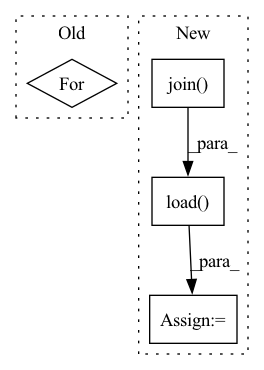

Pattern ID :22011

Before Change
for track, estimated_track in zip(mus.tracks, est.tracks):
estimates = {}
for target in self.sources + ["accompaniment"]:
estimates[target] = estimated_track.targets[target].audio
// Evaluate using museval
scores = museval.eval_mus_track(track, estimates, output_dir=self.json_dir)
After Change
estimated_accompaniment = 0
for target in self.sources:
estimated_path = os.path.join(self.estimates_dir, name, "{}.wav".format(target))
estimated, _ = torchaudio.load(estimated_path)
estimated = estimated.numpy().transpose(1, 0)
estimates[target] = estimated
estimated_accompaniment += estimated
In pattern: SUPERPATTERN
Frequency: 3
Non-data size: 4
Instances
Fragment ID: 69864290
Project Name: tky823/dnn-based_source_separation
Commit Name: 47bf376b81ab3a2a1dae78ac3dd78f7458fbb8a1
Time: 2021-08-14
Author: 40362510+tky823@users.noreply.github.com
File Name: egs/musdb18/d3net/src/adhoc_driver.py
M Class Name: AdhocTester
N Class Name: AdhocTester
M Method Name: eval_all(1)
N Method Name: eval_all(1)
M Parent Class: TesterBase
N Parent Class: TesterBase
M File Name: egs/musdb18/d3net/src/adhoc_driver.py
N File Name: egs/musdb18/d3net/src/adhoc_driver.py
M Start Line: 360
M End Line: 372
N Start Line: 359
N End Line: 383
'>
Before Change
def run(self):
results = museval.EvalStore(frames_agg="median", tracks_agg="median")
for track, estimated_track in zip(self.mus.tracks, self.estimated_mus.tracks):
scores = self.run_one_track(track, estimated_track)
results.add_track(scores)
print(results)
After Change
estimated_accompaniment = 0
for target in self.sources:
estimated_path = os.path.join(self.estimates_dir, name, "{}.wav".format(target))
estimated, _ = torchaudio.load(estimated_path)
estimated = estimated.numpy().transpose(1, 0)
estimates[target] = estimated
if target != "vocals":
estimated_accompaniment += estimated
'>
Fragment ID: 69864288
Project Name: tky823/dnn-based_source_separation
Commit Name: ffe57efd9e2dde3201347389cb13de92cf222706
Time: 2021-11-02
Author: delta9guitar97@gmail.com
File Name: egs/musdb18/common/src/driver.py
M Class Name: EvaluaterBase
N Class Name: EvaluaterBase
M Method Name: run(1)
N Method Name: run(1)
M Parent Class:
N Parent Class:
M File Name: egs/musdb18/common/src/driver.py
N File Name: egs/musdb18/common/src/driver.py
M Start Line: 293
M End Line: 297
N Start Line: 302
N End Line: 329
'>
Before Change
num_videos
) -> None:
model.load_actor(log_dir)
for i in range(num_videos):
env = Monitor(
env_fn(),
directory=f"{log_dir}/videos/{i+1}",
force=True
After Change
model,
log_dir,
) -> None:
model = model.load(os.path.join(log_dir, "networks.zip"))
episode_rewards, episode_lengths = evaluate_policy(
model,
env_fn(),
n_eval_episodes=5,
'>
Fragment ID: 69864289
Project Name: zhihanyang2022/off-policy-continuous-control
Commit Name: 454ab46f5e7f237c6ab0bba953c6d1d28c10922b
Time: 2021-05-29
Author: yangz2@carleton.edu
File Name: offpcc/basics/run_fns_sb3.py
M Class Name: AnonimousClass
N Class Name: AnonimousClass
M Method Name: load_and_visualize_policy(3)
N Method Name: load_and_visualize_policy(4)
M Parent Class:
N Parent Class:
M File Name: offpcc/basics/run_fns_sb3.py
N File Name: offpcc/basics/run_fns_sb3.py
M Start Line: 250
M End Line: 259
N Start Line: 242
N End Line: 251